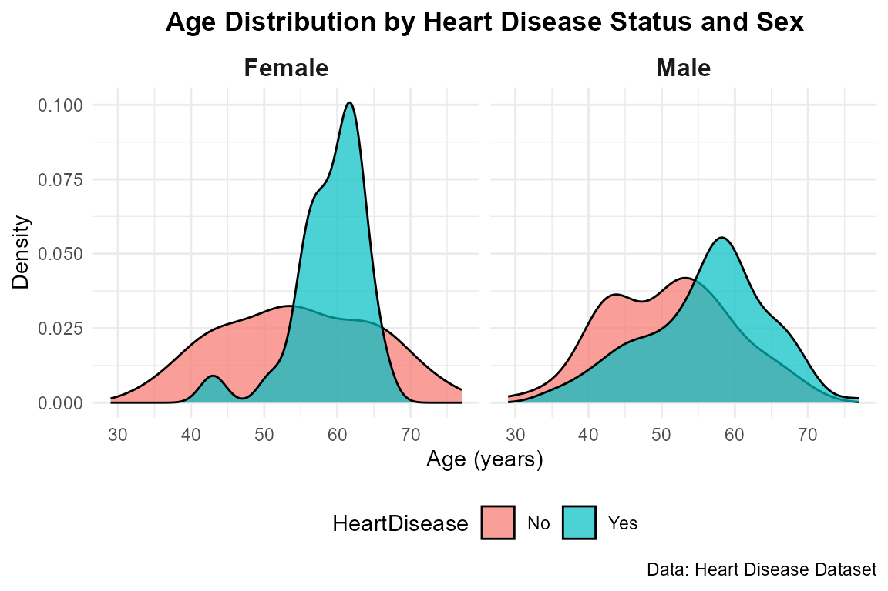
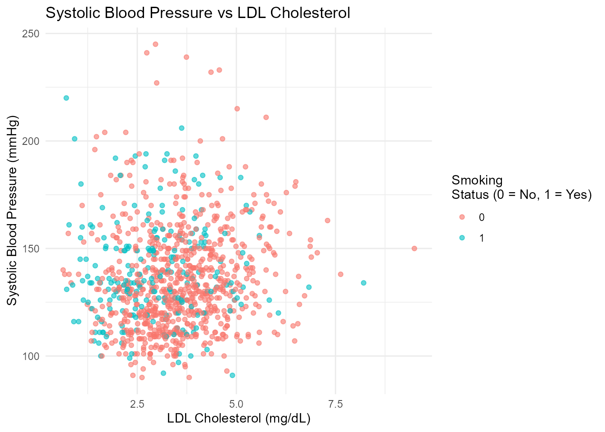
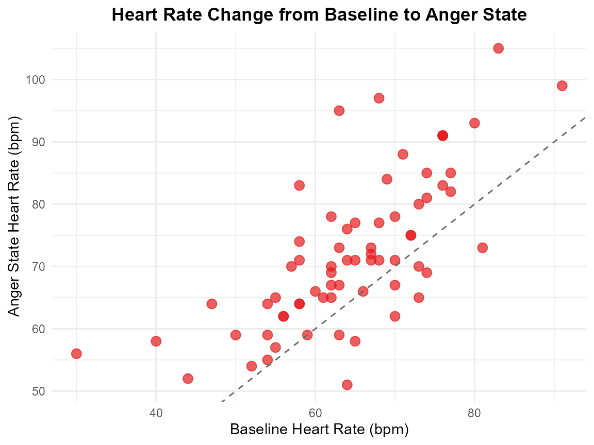

Introduction_to_CardioDataSets
Source:vignettes/Introduction_to_CardioDataSets.Rmd
Introduction_to_CardioDataSets.Rmd
library(CardioDataSets)
library(dplyr)
#>
#> Attaching package: 'dplyr'
#> The following objects are masked from 'package:stats':
#>
#> filter, lag
#> The following objects are masked from 'package:base':
#>
#> intersect, setdiff, setequal, union
library(ggplot2)Introduction
The CardioDataSets package offers a diverse collection
of datasets focused on heart and cardiovascular research. It covers
topics such as heart disease, myocardial infarction, heart failure,
aortic dissection, cardiovascular risk factors, clinical outcomes, drug
effects, and mortality trends.
The package is designed for researchers, clinicians, epidemiologists, and data scientists. It includes clinical, epidemiological, simulated, and real-world datasets that enable exploration of disease progression, treatment efficacy, cardiovascular risk, and patient outcomes across various populations and contexts.
This package supports the analysis and understanding of cardiovascular risk, treatment efficacy, and disease progression across various patient cohorts and clinical contexts.
Dataset Suffixes
Each dataset in the CardioDataSets package uses a suffix
to denote the type of R object:
_df: A data frame
_tbl_df: A tibble
_ts: time series
_mtc_network: network meta-analysis
_matrix: A matrix
Example Datasets
Below are selected example datasets included in the
CardioDataSets package:
heartdisease_tbl_df: Heart Disease Patients Clinical
Data.
cardioRiskFactors_df: Cardiovascular Risk Factors.
emotion_heartrate_df: Study investigating how recalling
anger affects heart rate.
Data Visualization with CardioDataSets Data
Distribution of Age in Heart Disease Patients
# Age density plot by heart disease status and sex
ggplot(heartdisease_tbl_df, aes(x = Age, fill = HeartDisease)) +
geom_density(alpha = 0.7) +
facet_wrap(~Sex, labeller = labeller(Sex = c("1" = "Male", "0" = "Female"))) +
labs(title = "Age Distribution by Heart Disease Status and Sex",
x = "Age (years)",
y = "Density",
caption = "Data: Heart Disease Dataset") +
theme_minimal() +
theme(legend.position = "bottom",
plot.title = element_text(face = "bold", hjust = 0.5),
strip.text = element_text(face = "bold", size = 12))
Systolic Blood Pressure (sys) vs LDL Cholesterol (ldl), colored by Smoking status (smok)
# Cardio risk factors: Blood pressure - cholesterol
ggplot(cardioRiskFactors_df, aes(x = ldl, y = sys, color = factor(smok))) +
geom_point(alpha = 0.6) +
labs(
title = "Systolic Blood Pressure vs LDL Cholesterol",
x = "LDL Cholesterol (mg/dL)",
y = "Systolic Blood Pressure (mmHg)",
color = "Smoking\nStatus (0 = No, 1 = Yes)"
) +
theme_minimal()
Heart Rate Change from Baseline to Anger State
ggplot(emotion_heartrate_df, aes(x = HR_baseline, y = HR_anger)) +
geom_point(size = 3, alpha = 0.7, color = "#E41A1C") + # Red points
geom_abline(intercept = 0, slope = 1, linetype = "dashed", color = "gray40") + # Reference line
labs(title = "Heart Rate Change from Baseline to Anger State",
x = "Baseline Heart Rate (bpm)",
y = "Anger State Heart Rate (bpm)") +
theme_minimal() +
theme(plot.title = element_text(hjust = 0.5, face = "bold"))
Conclusion
The CardioDataSets package provides a valuable and
curated set of datasets for cardiovascular research. It supports
advanced statistical analysis, exploratory data science, and teaching
purposes by offering structured and well-documented datasets across a
range of cardiovascular domains.